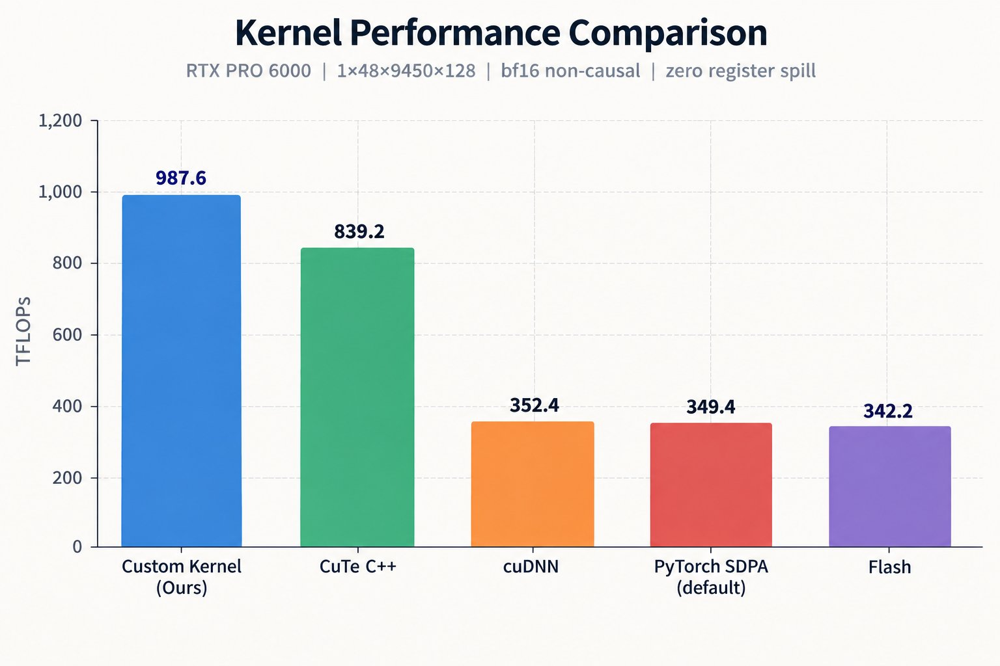
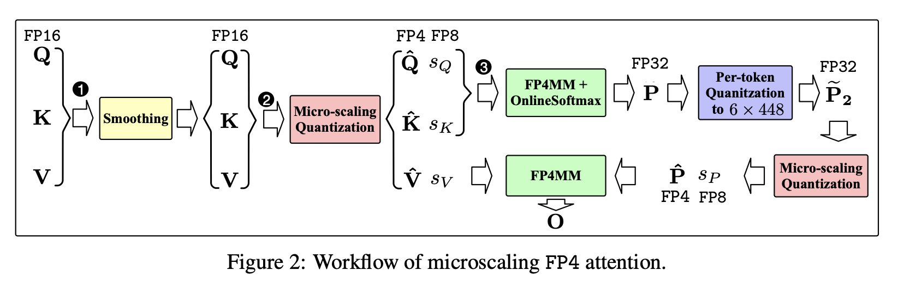
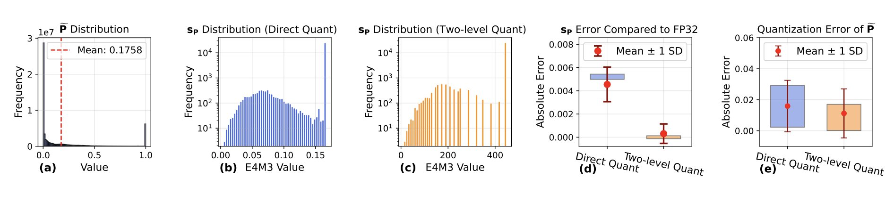
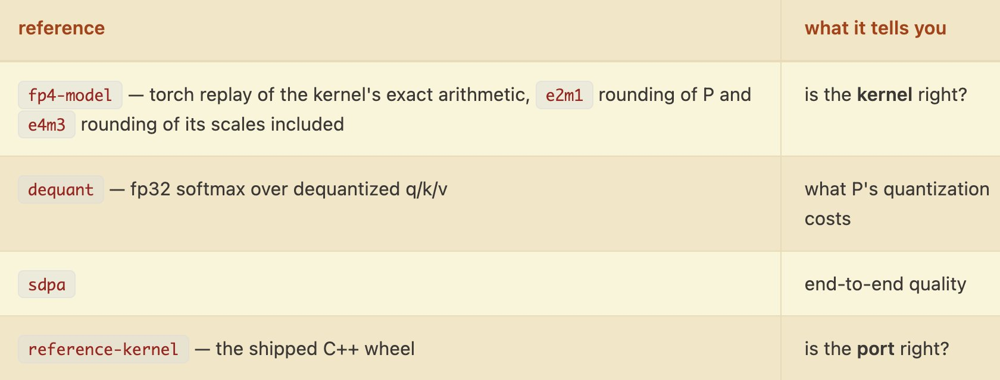

几周前，我的AI智能体在一个下午里，把一个CUDA C++ 的attention kernel移植成CuTeDSL版本，随后又做了优化。最终这个kernel比原版快1.2倍，比cuDNN版本快2.8倍。我认为智能体做kernel开发，最有杀伤力的用例就是移植。
我所说的「移植」包含两种情形：
● 不同的GPU版本：把一个跑在某类GPU上的kernel改到另一类GPU上，并用上目标架构特有的能力。比如从H100（Hopper）迁到B200（Blackwell）。
● 不同的抽象层次：把一个kernel从一种抽象层次换到另一种。比如从底层的NVIDIA CuTe C++ 换到Triton这类高层DSL（领域特定语言）。
智能体在这两种移植上都表现很好。下面讲讲我把Sage Attention 3这个kernel从CuTe C++ 移植到CuTeDSL、再做优化的经历。

为了让attention运算在NVIDIA消费级Blackwell GPU上更高效，Sage Attention 3引入了量化和低比特张量核心，用来加速运算内部GEMM（矩阵乘法）的推理。RTX 5090、6000 PRO这类GPU上的FP4张量核心，性能远高于FP16张量核心，所以得聪明地把它们用到attention kernel的GEMM里。论文在这里：https://arxiv.org/pdf/2505.11594
数值量化到FP4 e2m1时会出现严重的精度损失（这种格式只有15个可表示数值），Sage Attention 3也提出了一种方法缓解它：

FP4 attention有两个主要挑战：
● 逐张量（per-tensor）和逐token（per-token）量化都不足以保住模型精度，所以要把量化分组大小限制在1x16，也就是NVFP4格式。
● attention map P的数值主要落在 [0, 1] 这个小区间里。直接量化到FP4时，这些数值会把缩放因子压进极窄的动态范围，而硬件要求量化因子必须是FP8 e4m3类型，用FP8表示这些缩放因子会带来明显的精度损失。
针对第二个挑战，作者提出的方法是两级量化。它先用逐token（也就是逐行）量化，把每个token的取值范围归一化到 [0, 448 x 6]，从而吃满FP8 e4m3缩放因子的范围，然后再做FP4微观缩放量化。

Sage Attention 3的原始实现是CUDA C++，大约20个文件，全是模板和NVIDIA的CuTe抽象。光是读懂整个实现就得花我几天时间。代码在这里：https://github.com/thu-ml/SageAttention
sageattention3_blackwell
├── README.md
├── sageattn3
│ ├── __init__.py
│ ├── api.py
│ ├── blackwell
│ │ ├── __init__.py
│ │ ├── api.cu
│ │ ├── block_info.h
│ │ ├── blockscaled_layout.h
│ │ ├── cute_extension.h
│ │ ├── epilogue_tma_ws.h
│ │ ├── kernel_traits.h
│ │ ├── kernel_ws.h
│ │ ├── launch.h
│ │ ├── mainloop_tma_ws.h
│ │ ├── named_barrier.h
│ │ ├── params.h
│ │ ├── softmax_fused.h
│ │ ├── static_switch.h
│ │ ├── tile_scheduler.h
│ │ └── utils.h
│ └── quantization
│ ├── __init__.py
│ ├── cuda_utils.h
│ └── fp4_quantization_4d.cu
└── setup.py我想把它移植到CuTeDSL，享受JIT编译快、维护更省事、不用再受C++ 模板折磨的好处。而且我还想迭代优化这个kernel，把C++ 实现可能漏掉的那点性能榨出来。
优化后的CuTeDSL版本只有4个主要文件。其余文件是真正的harness（测正确性和跑benchmark），以及一些探针文件，那是Claude为了确认原C++ 实现里没有、CuTeDSL特有的API行为而生成的。
sage3_sm120
├── api.py
├── attn.py
├── ptx.py
└── quant.py这次移植的流程，和我之前一篇文章里讲的基本一致：https://x.com/maharshii/status/2086442755748970889
上下文目录里，我只给了Claude两个仓库：NVIDIA的cutlass和SageAttention，另外本地装了CuTeDSL。我还让它维护一个INDEX.md，说明context里每个目录能拿来做什么，大概长这样：
| 目录 | 是什么 | 权威依据 | 用来看什么 | 体积 |
|---|---|---|---|---|
| cutlass/（v4.8.0，include/cutlass/version.h） | NVIDIA CUTLASS的完整检出。真正有用的只有examples/python/CuTeDSL/ 和python/CuTeDSL/：前者是移植起步时的示例集，后者是DSL自身源码，价值高于示例，签名、LaunchConfig字段和环境变量处理都能直接读到，靠猜的话每猜错一次都要多花一轮GPU运行。 | 4.8版本的CuTe DSL API面、Blackwell示例kernel（dense/blockscaled/grouped GEMM、attention）、cute_ext的pipeline与epilogue辅助、blockscaled_layout.BlockScaledBasicChunk（ue8m0 / nvfp4缩放单元），以及utils/blackwell_helpers.py | sage_sm120以及未来任何一个CuTeDSL kernel | 265 MB。examples/python/CuTeDSL/ 约4 MB，python/CuTeDSL/cutlass/ 约10 MB；剩下的是include/、test/ 和tools/，都是C++，在这里提供不了任何有用信息。 |
| SageAttention/（main分支，浅克隆） | thu-ml官方的SageAttention / SageAttention2++ / SageAttention3，量化attention的手写CUDA实现（mma.sync + cp.async + swizzled smem），另有Triton回退版本和融合量化器。 | SageAttention3的算术逻辑与CuTe layout抽象 | sage3_sm120，以及任何fp4/fp8/int8量化attention相关工作 | 检出106 MB；csrc/ 里388 KB就是整个kernel。assets/ 有42 MB、example/ 有12 MB，都是噪音。 |
整个移植过程中，我让智能体把它遇到的CuTeDSL坑和陷阱都记进一个README.md。这样它就能把和DSL特性相关的知识留住，不会忘掉。
harness文件也沿用了我上一篇文章的做法，并随移植阶段不断迭代。它跑的是一个测试阶梯，顺序安排得让任何失败都能就地定位：先从host侧代码开始，再到kernel侧的测试，最后和参考实现对比。

harness还会让智能体把PTX、SASS和CUBIN文件dump出来，借此检查寄存器溢出、指令数量、向量化，以及其他优化机会。它会把dump文件里读到的kernel信息写进asm_info.json，大概长这样：
{
"backend": "cutedsl",
"arch": "sm_120",
"ptx_lines": 4500,
"launch_directives": [
".reqntid 384, 1, 1",
".minnctapersm 1",
"setmaxnreg.dec.sync.aligned.u32 \t24;",
"setmaxnreg.inc.sync.aligned.u32 \t232;"
],
"ptx_target": "sm_120a",
"ptxas": {
"registers": 168,
"spill_stores": 0,
"spill_loads": 0,
"smem": 0,
"cmem": 0
},
"cuobjdump": {
"registers": 168,
"spill_bytes": 0,
"stack": 0,
"smem": 1024
},
"sass_counts": {
"shared load": 116,
"shared store": 16,
"global load": 7,
"global store": 2,
"ldmatrix": 66,
"stmatrix": 16,
"blockscaled MMA": 128,
"transcendental": 170,
"barrier": 6,
"narrowing convert": 104
}
}智能体还把试过的每项优化都记在同一个README.md里，形成一份持续更新的日志。收益最大的是对TMA/MMA warp的寄存器做增减，以及它有意偏离C++ 实现的几处做法：
- masking compares token indices, not tile column indices,
- causal masking also applies the unpadded-length limit, which the C++ drops
- ``AbsMaxP`` is seeded from -inf rather than from uninitialised registers
- the O accumulator is zeroed before the first PV MMA accumulates onto it
- O is rescaled in place and accumulated onto directly, dropping the C++'s second accumulator -- 64 registers against a 456-byte spill
- a causal tile with no work runs one fully masked block instead of taking the C++ early-exit, which would desynchronise the epilogue handshakeREADME里的优化日志表格如下：
| 改动 | 溢出寄存器数 | ld.shared指令数 |
|---|---|---|
| 基线（12 warps，setmaxnreg） | 456 | 194（scalar） |
| 去掉tOrO_tmp，就地重算O | 304 | 194 |
| SF拷贝改用autovec_copy | 296 | 98 |
| 12 → 10 warps，去掉setmaxnreg | 296 | 98 |
| min_blocks_per_mp=1 | 272 | 98 |
| 在delta_s的读取上加 .align(16) | 无 | 50（48 v4） |
| rcp.approx，并且只对剥出的block做mask | 104 | 50 |
| 把量化交织到PV MMA之下 | 280 | 50 |
| 12 warps + setmaxnreg 24/232 | 0 | 50 |
这些实现上的差异，让CuTeDSL kernel比原始C++ 实现快1.2倍。
整体看，快速移植kernel是智能体做kernel开发相当好的一个用例。这次移植过程中我一行CuTeDSL代码都没写，却拿到了比原始实现更快的kernel，把几天的工作量压缩到几个小时。过程中仍然需要一些来回沟通，把智能体引到更好的路子上，但这比让它自己从头摸索要快。我敢打赌，随着模型变强，需要人介入的这段差距会持续收窄。
参考：https://x.com/maharshii/status/2100193318277890174